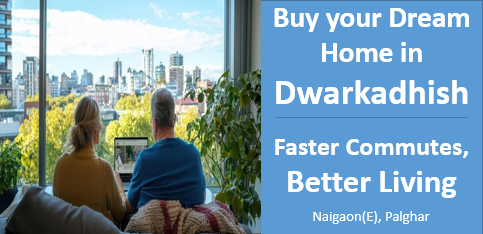

Buy your Dream Home in Dwarkadhish:Faster Commutes, Better Living.
Enhancing Lives, Elevating Communities
Reducing Travel Time for a Better Tomorrow
One of the most significant advantages of improved infrastructure is the reduction in travel time. The Naigaon East-West Bridge has played a pivotal role in shortening the commute between the eastern and western parts of Naigaon, making daily travel within the locality far more efficient. Furthermore, the extension of Mumbai Metro Line 9 will directly connect Naigaon to key areas like Mira-Bhayandar and Andheri, greatly cutting down travel time to major business hubs in Mumbai. The upcoming Mumbai-Ahmedabad High-Speed Rail Corridor, with a station near Naigaon, will also help residents save valuable time on long-distance travel. Enhanced roadways, such as the expanded Mumbai-Naigaon Highway, alongside improved public transport systems, have all contributed to significantly shorter commutes for Naigaon residents. This reduction in travel time not only boosts work-life balance but also makes Naigaon an increasingly attractive place to live for professionals working in Mumbai.
Connecting Residents to Essential Amenities
Improved infrastructure plays a crucial role in increasing access to essential amenities such as healthcare, education, and recreational facilities. In Naigaon, the presence of prominent institutions like Don Bosco High School and Junior College, along with healthcare facilities such as Navjeevan Hospital, has significantly enhanced the area's appeal. Furthermore, the development of recreational spaces like Naigaon Fort Park provides residents with leisure options right at their doorstep. These accessible amenities, made possible by improved infrastructure, make Naigaon’s residential areas more desirable. For families seeking a comprehensive living experience, Naigaon offers a balanced lifestyle, with all essential services and facilities within easy reach.
Conclusion
In conclusion, the ongoing improvements in Naigaon’s infrastructure have not only streamlined daily commutes but also enhanced access to vital amenities, making it an increasingly attractive place to live. With better connectivity through the Naigaon East-West Bridge, Metro Line 9, and the upcoming High-Speed Rail Corridor, residents can enjoy significantly reduced travel times. At the same time, the availability of quality educational institutions, healthcare facilities, and recreational spaces has enriched the overall living experience. These developments create a balanced, convenient, and desirable lifestyle, positioning Naigaon as an ideal destination for families and professionals alike.
Contact us
+91 72088 43484 / +91 72088 43487
kkcreateandbiuld@gmail.com
Radha Nilaya, Plot No. 164/2,
Bapane Village, Chandrapada Road,
Naigaon (E) - 401208,
Maharashtra, India.